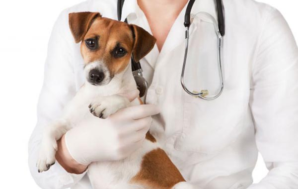
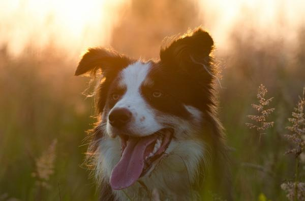
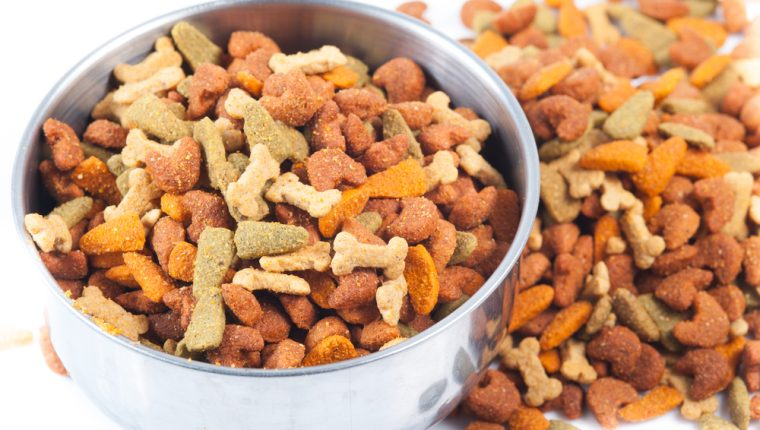
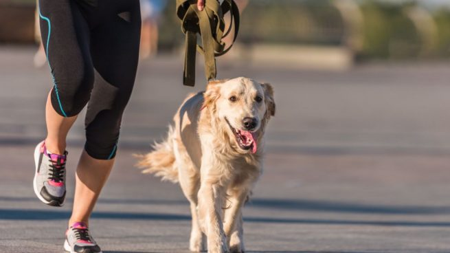
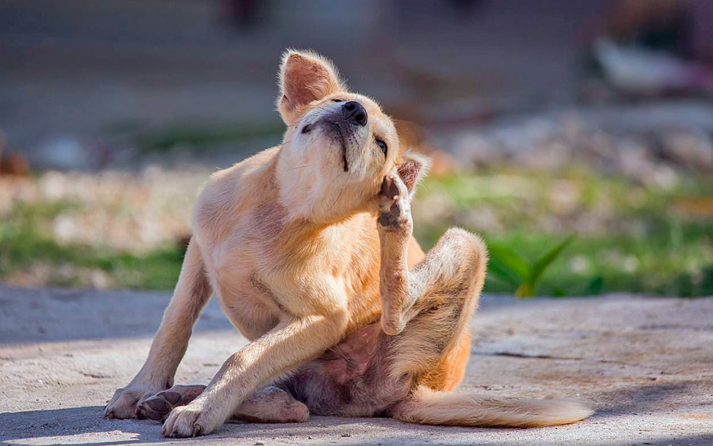

1. Cuidados veterinarios
Los cachorros no pueden salir a la calle sin vacunación pues la probabilidad de contagio de enfermedades es elevado y puede suponer un riesgo para su salud. Por ese motivo, tu perro debe acudir al veterinario y someterse a su vacunación pertinente para descartar que pueda sufrir. El calendario requiere:
- Una primera vacunación entre las 6 y 8 semanas para prevenir el distemper, la hepatitis, el parvovirus, el coronavirus, la parainfluenza y la leptospira.
- Se realizarán dos refuerzos iguales de esta primera vacunación.
- Más adelante se le vacunará contra la rabia.
- Pasadas unas semanas, se le vacunará contra la giardia y la bordetella.
- Finalmente el perro recibirá un refuerzo de todas ellas cada x período de tiempo, el que recomiende el veterinario. El refuerzo se realizará cada vez con menos frecuencia a la vez que el perro vaya envejeciendo, pues las probabilidades de contagio se ven reducidas.
2. Cuidados básicos
Tu perro necesita una serie de cuidados y atenciones por tu parte que deberás cumplir de forma diaria:
- Proporciónale una cama mullida para dormir.
- El perro deberá tener un bebedero con abundante agua fresca y limpia cada día.
- Dale alimento de calidad específico según la etapa de su vida.
- Los juguetes y mordedores no pueden faltar para que se entretenga cuando tú no estés.
- Limpiarle las legañas a diario y un baño de vez en cuando serán condiciones básicas.
- Sacarle a pasear al menos 2 o 3 veces al día.
3. La alimentación del perro
En ExpertoAnimal encontrarás artículos específicos sobre la alimentación del perro y es que éste debe recibir unos nutrientes y vitaminas especiales para su desarrollo, siempre adaptado a cada etapa de su vida.
La opción más recomendada es combinar los tres tipos de dieta existentes dando siempre preferencia a un pienso de alta calidad junto a dietas húmedas y dietas caseras. Recuerda que en el caso de los cachorros y de los perros senior, así como perros que tengan problemas de salud, tendrán una dieta específica a veces complementada con vitaminas o calcio.
4. El baño

Un perro de raza pequeña puede bañarse cada 2 semanas y uno de raza grande 1 o 2 veces al mes. Eso sí, es muy importante que utilices productos para perros ya que éstos respetan su pelaje y el pH de su piel además de incorporar porcentajes de antiparásitos. Al mismo tiempo que habitúas a tu perro al baño, deberías utilizar productos que le permitieran tener una correcta higiene dental y evitar la acumulación de placa.
Después del baño es importante que siempre apliquemos pipetas para evitar la aparición de pulgas o garrapatas.
5. Paseos y actividad física
Es fundamental que pasees a tu perro entre 2 y tres veces al día siempre teniendo en cuenta la frecuencia de sus necesidades. En el paseo debes mostrarte tranquilo y dejar que tu perro huela el entorno, si está debidamente vacunado no tienes nada por qué temer.
Además del paseo que realizarás es muy importante que tu perro realice ejercicio ya que desarrolla su musculatura y le proporciona relajación. Puedes ir a correr con él o compartir juntos un paseo en bici, y si no, siempre puedes dejarlo una hora en el pipi-can junto a otras mascotas.
6. Inspección de parásitos
Las pulgas y las garrapatas siempre son una amenaza para el perro que puede volverse grave si no recibe tratamiento o prevención alguna. Para detectar la presencia de estos parásitos y poder actuar con toda la antelación posible es importante que supervises el pelaje de tu perro acariciándole a contra pelo. Este hábito debes mantenerlo siempre, e intensificarlo en los meses de más calor.
Debes prevenir la aparición de los insectos aplicándole después del baño una pipeta contra los mosquitos, pulgas y garrapatas e incluso contra la Leishmania si es posible. En el mercado también encontrarás collares que son un excelente refuerzo. Estate atento a los problemas que pueda tener tu perro.